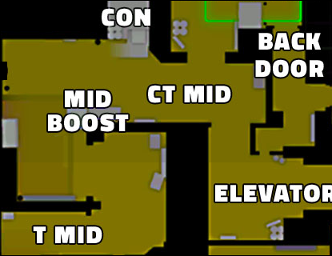

Middle

Mid is a central area of Mirage, connecting both bombsites and providing critical map control for both teams.
It consists of several key positions such as Window, Underpass, Ladder, and Connector.
Controlling the mid-area is essential to have the most information and to be able to attack from more angles.
CT strategy
One players is going to hold Mid and he will be positioned in Window.
Their goal is to win mid wich provides critical map control and faster rotation.
|
T strategy
One players is going to push Mid and he will do it through top mid.
Their goal is to win mid wich provides critical map control and more pushing angles.
|